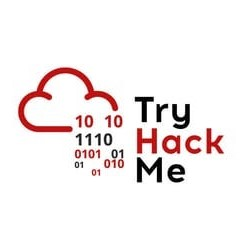
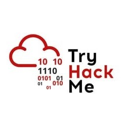
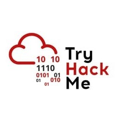
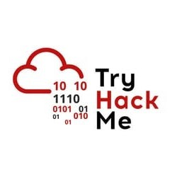

Laboratorios Vulnerables
 



 

En esta sección encontrarás máquinas creadas por mí, con diferentes dificultades y configuradas a propósito con varios fallos de seguridad en diversos servicios para que el usuario pueda practicar sus habilidades en cuanto al Análisis de Vulnerabilidades y Tests de Penetración, entre otros..
Estarán hechas o bien con Docker, ya que al emplearse Contenedores el tamaño de cada máquina es considerablemente más ligero, permitiendo una mayor comodidad a la hora de descargarlas y alojarlas en local, o bien estarán hechas en formato .OVA, es decir, máquinas de toda la vida de Virtual Box y VMware.
Aquí os dejo la primera máquina que creé, en colaboración con la plataforma Dockerlabs, un lugar muy recomendable para aprender Hacking de la mano de máquinas ligeras y con una gran variedad de vulnerabilidades y vectores de ataque en ellas.
Agradecimientos a Mario Álvarez Fernández por aportar tremenda plataforma gratuita para la comunidad Hacker.
Obssesion es un máquina destinada a Hackers principiantes que estén dando su primeros pasos y quieran indagar en los servicios más comunes que se utilizan en un equipo, y que sea curioso a la hora de explorar diferentes formas de explotación.
El comprimido viene con: obssesion.tar y auto_deploy.sh. Ambos archivos son necesarios para ejecutar la máquina. El comando a utilizar (teniendo ambos archivos en la misma carpeta) sería el siguiente: sudo bash auto_deploy.sh obssesion.tar